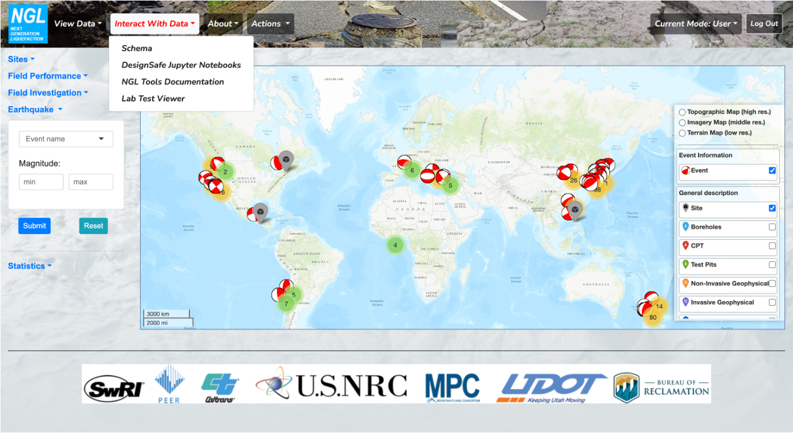
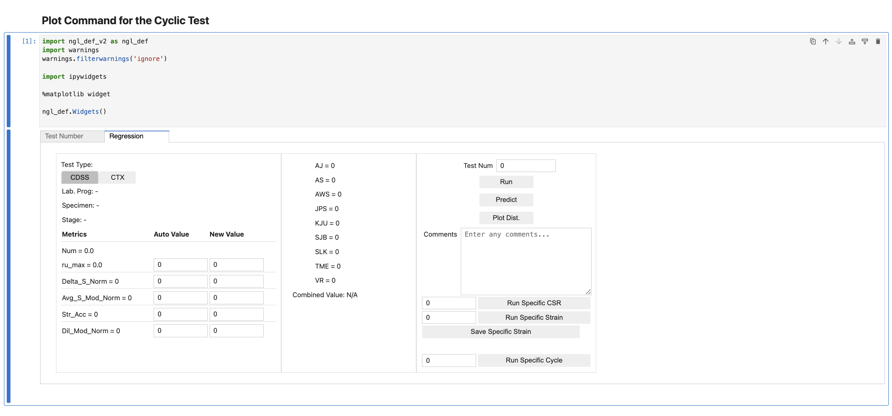
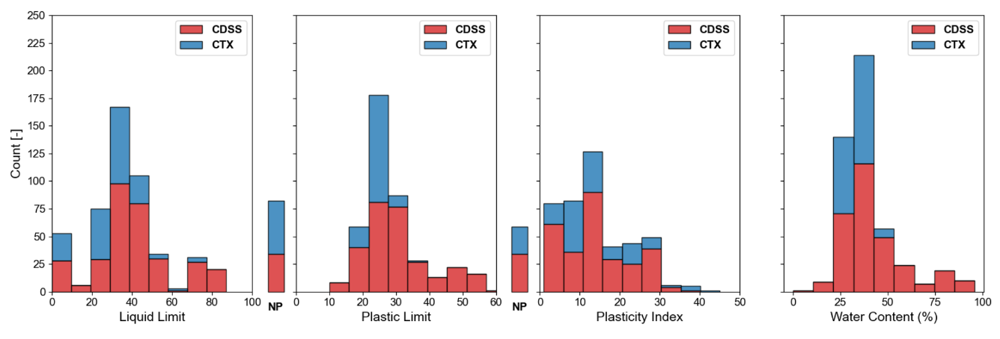
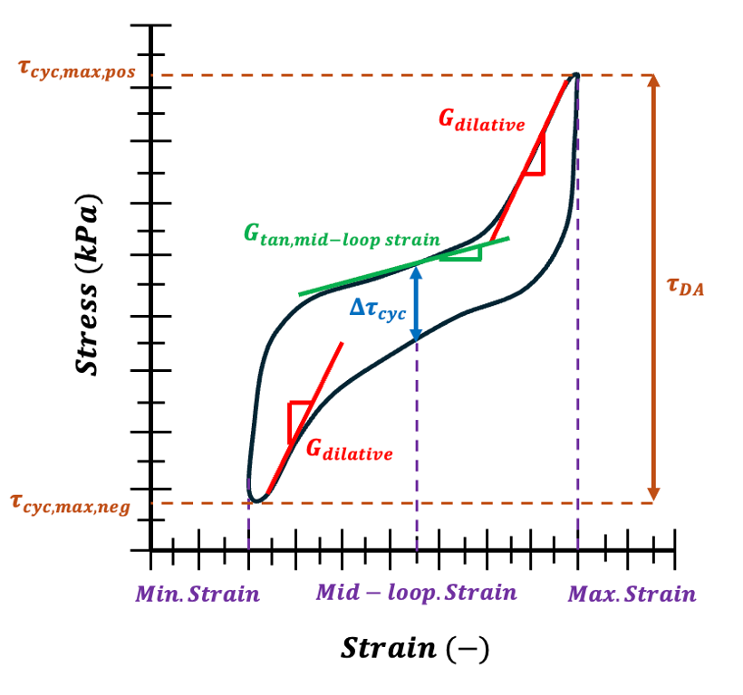

Digital Research Poster
Visualization and Interpretation of Cyclic Laboratory Test Results for Soil Behavior Assessment
1University of California, Los Angeles, Los Angeles, CA 90095, USA
2Montana State University, Bozeman, MT 59717, USA
3Southwest Research Institute, San Antonio, TX 78238, USA
4Oregon State University, Corvallis, OR 97331, USA
5University of Washington, Seattle, WA 98195, USA
Soil response under dynamic loading can include pore pressure generation that leads to strength loss. The level of pore pressure generation and strength loss is complex and is analyzed in different ways for different soil types. The determination of how the soil response should be evaluated is referred to as a susceptibility analysis, with the end members of behavior being sand-like and clay-like. As part of the Next Generation Liquefaction (NGL) project, new probabilistic liquefaction susceptibility models are being developed using the cyclic responses of soils from laboratory tests. This project entails: i) populating the NGL database with cyclic test results that include measured index properties and nearby cone penetration test (CPT) results; ii) visualizing cyclic test results and interpreting them to quantitatively characterize the soil response; iii) gathering expert analyst responses to evaluate soil behavior via a web form; iv) developing an interim model between the quantitative metrics and analyst responses; and v) proposing a probabilistic susceptibility model using easily accessible soil properties in the field, such as Atterberg Limits and CPT results.

NGL Lab Viewer Explore susceptibility lab test data, available summaries, and a short feature walkthrough.
Example Python Workflow Review an example analysis workflow using the NGL database and a short video demonstration.Interactive Section
NGL Lab Viewer
NGL Lab Viewer was developed to interact with laboratory test data in the NGL database. It allows users to download and visualize data uploaded by researchers and practitioners to the database. Currently, there are 406 cyclic direct simple shear (CDSS) specimens and 153 cyclic triaxial specimens (CTX) in NGL, compared with a total of only 83 specimens before the NGL susceptibility project.

Workflow Section
Example Python Workflow
This section demonstrates the potential usage of NGL laboratory data. Because the NGL database is a relational database that allows users to query data with consistent naming, external workflows can be developed using this data. An example workflow is presented below, showcasing the visualization and interpretation of cyclic test results for the NGL susceptibility project.
